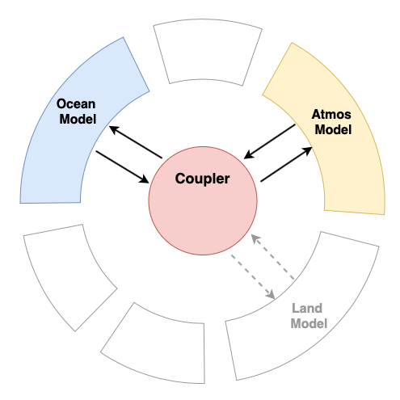

ClimaCoupler.jl
Coupling CliMA Models
ClimaCoupler.jl provides a means to couple CliMA model components. It is designed to provide a flexible way to map boundary fluxes of quantities, like moisture and heat, that leave one component model (for example the atmosphere) to boundary fluxes of another component model (for example the ocean model). Functionality includes:
- coupled system time stepping control that integrates fluxes in time for sharing between components with differing time steps and/or time stepping schemes.
- support for mapping import and export boundary information between components so that fluxes of properties transferred between components are conserved.
The ClimaCoupler supports coupling components that are all within the same process or coupling components (using MPI) that are running on different processes.
|  |
|---|
| ClimaCoupler.jl allows for independent development of interchangeable component models. |
ClimaCoupler.ClimaCoupler — ModuleClimaCouplerModule for atmos-ocean-land coupled simulations.